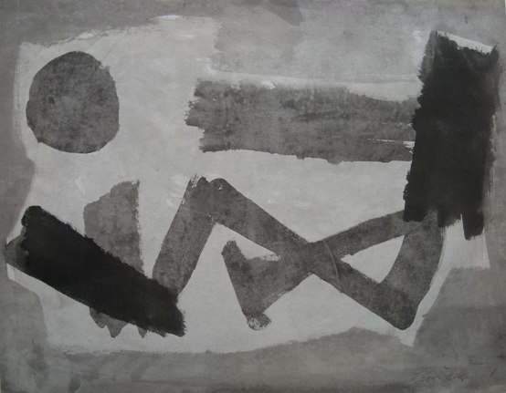

Leon Zack
1892 – 1980
Artist Biography
Leon Zack (or Lev Zak) was a Russian painter of Jewish origin born at Nijni-Novgorod. He exhibited at the Moscow Salon in 1907, aged just 15. Zack studied classics at Moscow University, and gained a strong reputation as an experimentalist poet whilst at the same time attending schools of painting. After fleeing the Russian civil war, he lived in Florence from 1920-22; then after a year in Berlin, where he designed costumes and sets for the Russian ballet, settled in Paris. There he exhibited at the Salon D’Automne and the Salon des Independents and was a founding member of the Salon des SurIndependents. His first one-man show was at the Gallerie Percier in 1927 and from that time he had frequent solo shows in Paris and abroad, including Storran Gallery in London in 1939 and Redfern Gallery in 1947. His work was at first figurative and Zack, who had become a Catholic convert, frequently painted scenes from the bible. Later, he designed stained glass windows for St. Sulpice, Paris in 1957 and for the Sacre-Coeur, Mulhouse in 1959. From about 1945 his easel painting began to abandon figuration for geometrical abstraction. By 1947 Zack’s work had become entirely non-representational, his work becoming an expressive mode of tachisme with sensitively worked blotches disposed in the middle of a monochromatic textured surface. He had exhibitions of such abstract works at the Gallerie Kleber in Paris, Drian and Waddington Galleries in London and many other venues in the 1950s and 1960s. Zack is represented in, amongst other public collections, the Carnegie Institute, Pittsburgh, Tate Gallery, London and Musee Royal de Bruxelles.

Untitled